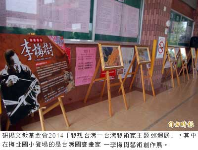

台灣藝術家主題巡迴展在梅北國小登場
謝銀仲｜自由時報／生活∣2014年9月23日
研揚文教基金會2014「藝想台灣－台灣藝術家主題巡迴展」，今天早上在梅山鄉梅北國小的中廊，由溪口國小鼓陣隊雄壯威武、氣勢磅礡的擊鼓樂聲及梅北國小小朋友精采舞蹈等表演揭幕，場面熱鬧滾滾。
研揚文教基金會2014「藝想台灣－台灣藝術家主題巡迴展」，共有台灣色彩－曾郁文創作展、繪本阿公－鄭明進插畫展、疼惜福爾摩莎－楊興生油畫創作展、台灣國寶畫家－李梅樹藝術創作展、飛覽台灣－齊柏林攝影展等五大展覽主題，預計在嘉縣梅北、福樂、安東、蒜頭、義竹、忠和、北回、水上、和睦、溪口等10所國小，以輪流巡迴方式展出。
其中梅北國小部分，從即日起進行台灣國寶畫家－李梅樹藝術創作展，今早並在副縣長林美珠、研揚文教基金會執行長黃慧美及上述10所學校校長等人共同見証下，啟動聯合開幕典禮。
除開幕典禮，梅北國小也安排美術老師進行一場教學觀摩，讓與會來賓及小朋友們對李梅樹的油畫有具體的認識，對台灣曾經擁有的美麗感到醉心，也啟發對土地的反省與回饋。
梅北國小校長陳媺慈期許透過本次活動，讓學童了解台灣文化特色及對土地的認同與關注，共同提昇嘉縣學童藝文素養，深化嘉縣學子對鄉土感情，讓藝術得以照亮偏鄉角落。